Screen space
Contents
Screen space#
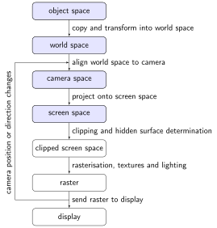
After aligning the world space to the viewer we need to transform the three-dimensional camera space to a two-dimensional space that we can represent on a computer display. This is achieved by defining a projection plane that is parallel to the \(x\) and \(y\) axes of the camera space (we have dropped the \(^\ast\) suffix from the camera space co-ordinates) and positioned so that intersects with a negative value on the \(z\) axes (Fig. 62).
{kind=link}
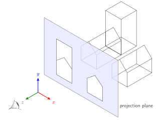
Fig. 62 The camera space is projected onto a projection plane.#
Orthographic projection#
The simplest kind of projection is the orthographic projection. This is where we simply ignore the \(z\) co-ordinate of each point in the camera space, and consider the positions of the points in the plane to be given by their \(x\) and \(y\) coordinates.
An orthographic projection can often be carried out directly without the need for any real processing by simply neglecting the \(z\) co-ordinate of all the points. However to retain consistency with our previous matrix representations we could carry out this projection with the use of the transformation matrix (again using homogeneous coordinates) \(P\) given by
A point with a position given by the homogeneous camera space co-ordinates \((x, y, z, 1)\) the orthographic screen space co-ordinates are calculated using
The orthographic projection of the camera space from Example 31 is shown in Fig. 63. Note that the two house objects appear the same size even though the house object on the right is closer to the viewer.
{kind=link}
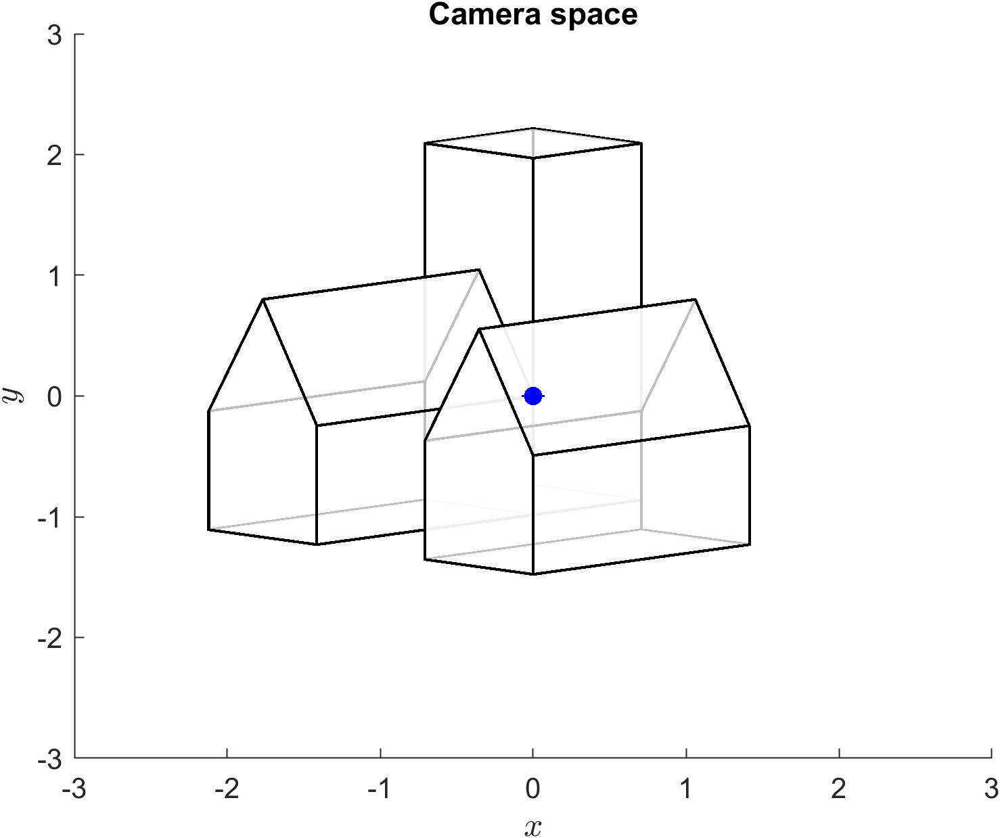
Fig. 63 The camera space from Example 31 projected using orthographic projection.#
Perspective projection#
We have seen in Fig. 63 that the problem with using orthographic projection is that we lose all the depth information and will not be able to tell which object are closer than others. Perspective projection retains this depth information by making objects further away from the viewpoint appear smaller in the projection than similar objects closer to the viewpoint. Perspective projection emulates the way the human eye, or a camera, perceives objects. Rays of light are reflected off objects and travel in straight lines, converging on the eye, or lens, which for these purposes can be thought of as a single point, the viewpoint.
In perspective projection the viewpoint is often called the centre of projection, it is the point where all the projectors meet. The projected image is formed on a projection plane, a plane parallel to the \(xy\)-plane and positioned at a distance \(f\) from the centre of projection (which after alignment is of course positioned at the origin). The projection plane can be thought of as a glass pane held up between the eye and the scene being viewed (Fig. 64). A projector line from a point in the world space intersects the projection plane in the projected point, and then goes through the centre of projection.
{kind=link}
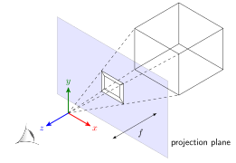
Fig. 64 Perspective projection#
Consider the diagram shown in Fig. 65 where the point with co-ordinates \((x, y, z)\) is projected onto the projection plane located at \(z=-f\) to give to the point with co-ordinates \((x', y', z')\).
{kind=link}
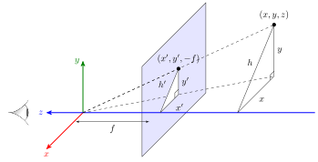
Fig. 65 Perspective projection of the point \((x, y, z)\) onto the projection plane located at \(z=-f\).#
The triangle with sides \(x\), \(y\) and \(h\) is similar to the triangle \(x'\), \(y'\) and \(h'\) so
which gives the projected co-ordinates
Both \(x'\) and \(y'\) are divided by \(-z / f\) so the homogeneous co-ordinates of the projected point is \((x, y, z, -z/f)\) (remember that we divide by the fourth co-ordinates to convert to Cartesian co-ordinates). Therefore the transformation matrix for perspective projection is
The screen space co-ordinates of a point with the homogeneous camera space co-ordinates \((x, y, z, 1)\) are calculated using
and dividing by the fourth co-ordinates gives \((-fx/z, -fy/z, -f, 1)\) which are the projected co-ordinates derived above.
The viewing frustum#
When we view a virtual world we will only be able to see objects that are located within a finite region known as the viewing frustum. Consider the diagram shown in Fig. 66. The camera space is projected onto the near viewing plane and we view the virtual environment through the display screen which lies on the near projection plane. If we place another plane parallel to the projection plane further away from the origin then we have a volume which will contain the region of the camera space that should be visible to us. The location of the far viewing plane depends upon the computing power available, the further away it is the more of the camera space we will be able to see but this will of course require more computational resources.
{kind=link}
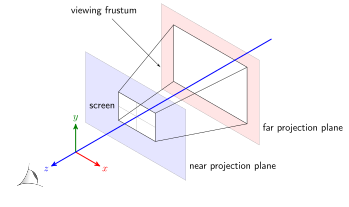
Fig. 66 The viewing frustum#
The viewing frustum is an awkward shape to deal with when it comes to clipping objects that lie partially outside so we transform it so that the viewing frustum is a cube with sides of lengths 2 parallel to the co-ordinate axes whilst still maintaining the perspective projection. Consider the diagram shown in Fig. 67 where a near viewing plane is positioned at distance \(near\) from the origin of the camera space. The camera space co-ordinates of the vertices of the screen on the near projection plane are \((l,b,-near)\), \((r,b,-near)\), \((r, t, -near)\) and \((l, t, -near)\) where \(l\), \(r\), \(t\) and \(b\) denote left, right, top and bottom edges respectively. The values of these co-ordinates are determined by the width-to-height ratio of the screen and the position of the near viewing plane, the field of view angle, \(fov\), which controls the horizontal peripheral vision of the viewer.
{kind=link}
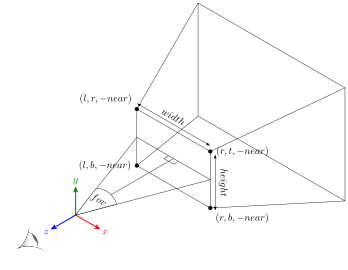
Fig. 67 The viewing frustum#
We want to transform the viewing frustum so that its sides are parallel to the co-ordinate axes and each have side lengths of 2 as shown in Fig. 68. The co-ordinates of the left, right, top and bottom corners of the screen are transformed so they are either \(-1\) or \(+1\).
{kind=link}
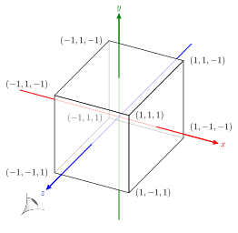
Fig. 68 The transformed viewing frustum#
The co-ordinate of the right edge, \(r\), is calculated using
and since the centre of the screen is on the \(z\) axis then \(l = -r\). The co-ordinate of the top edge, \(t\), is determined by the aspect ratio of the screen
so
Common aspect ratios are 4/3 (for old televisions and computer monitors), 16/9 (modern televisions) and 2.35/1 (cinema screens).
To transform the viewing frustum we need to transform the camera space so that the points within the viewing frustum have \(x'\), \(y'\) and \(z'\) co-ordinates in the range \(x',y',z' \in [-1,1]\) and projected using perspective projection. The \(x\) camera space co-ordinate for a point that is on the near projection plane and within our screen will be in the range \(l \leq x \leq r\). Since \(l = -r\) and dividing throughout by \(r\) we have
and using perspective projection \(x' = -near \cdot x / z\) then
so
Doing similar for \(y'\) gives
Now \(x'\) and \(y'\) are perspective screen space co-ordinates that are in the range \(-1 \leq x', y' \leq 1\). The matrix that performs this transformation is
where \(\alpha\) and \(\beta\) are some scalars. A point with the homogeneous camera space co-ordinates \((x, y, z, 1)\) the screen space co-ordinates are calculated using
and dividing by the fourth co-ordinate to convert to Cartesian co-ordinates we have
The \(z\) camera space co-ordinate for a point within the viewing frustum is in the range \(-near \leq z \leq -far\) so we need to transform \(-near \mapsto 1\) and \(-far \mapsto -1\). So the minimum and maximum \(z'\) co-ordinates are
Solving for \(\alpha\) and \(\beta\) gives \(\alpha = (near + far)/(near - far)\) and \(\beta = 2 \cdot near \cdot far / (near - far)\) so the transformation matrix becomes
The transformation matrix \(P\) combines perspective projection and transformation of the viewing frustum to a cube. The screen space co-ordinates are calculated using
Each column in \(V_{\text{screen}}\) is a homogeneous screen space co-ordinate where the fourth row contains the scaling factor. The Cartesian co-ordinates are calculated by dividing \(V_{\text{screen}}\) by the fourth row.
Example 32
The camera space from Example 31 is projected onto the screen space defined by near and far projection plans located at distances \(near = 1\) and \(far = 5\) from the origin, a field of view angle of \(fov = \pi/2\) and a width-to-height screen aspect ratio of \(4/3\). Calculate the screen space co-ordinates of the virtual world.
Solution
First we calculate the \(r\) and \(t\) co-ordinates
so the projection matrix is
Applying the perspective transformation matrix to the camera space co-ordinates from Example 31
Since these are homogeneous co-ordinates we need to divide by the fourth row to give the Cartesian co-ordinates
MATLAB code#
The MATLAB code below calculates the screen space co-ordinates for the virtual world from Example 30 with the viewing parameters from Example 31 and projected using perspective projection with the screen parameters from Example 32.
% Define projection parameters
near = 1;
far = 5;
fov = pi/2;
aspect = 4/3;
% Calculate projection matrix
r = near * tan(fov / 2);
t = r / aspect;
P = [-near / r, 0, 0, 0 ;
0, -near / t, 0, 0 ;
0, 0, (near + far) / (near - far), 2 * near * far / (near - far) ;
0, 0, 1, 0 ];
% Calculate screen space co-ordinates
Vscreen = P * Vcamera;
Vscreen = Vscreen ./ Vscreen(4,:);
% Plot screen space viewed looking down the z-axis
figure()
h1 = axes;
patch('Vertices', Vscreen([1,3,2],:)', 'Faces', F, FaceColor='w', FaceAlpha=0.75, LineWidth=1)
xlabel('$x$', 'Interpreter', 'latex', 'FontSize', 18)
ylabel('$z$', 'Interpreter', 'latex', 'FontSize', 18)
zlabel('$y$', 'Interpreter', 'latex', 'FontSize', 18)
set(h1, 'Ydir', 'reverse')
view(0,0)
box on
axis([-1.2, 1.2, -1.2, 1.2, -1.2, 1.2])
A plot of the camera space with the viewing frustum defined using the viewing parameter from Example 32 is shown in Fig. 69.
{kind=link}
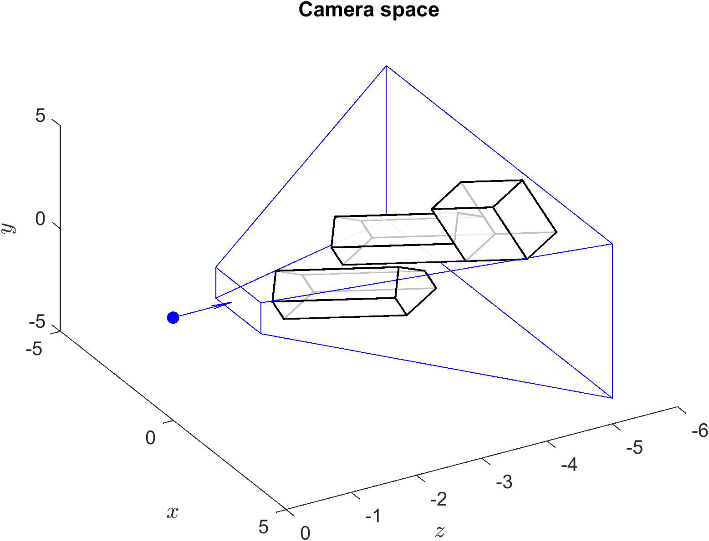
Fig. 69 The camera space and viewing frustum from Example 32.#
The affect of applying the perspective projection to the camera space is shown in Fig. 70. Note that the viewing frustum is now a unit cube and the camera space objects have been skewed so that the polygons of the object closest to the viewer are larger than similar polygons further away. The plot of the screen space viewed looking down the \(z\)-axis is shown in in Fig. 71 which gives a realistic representation of the world space.
{kind=link}
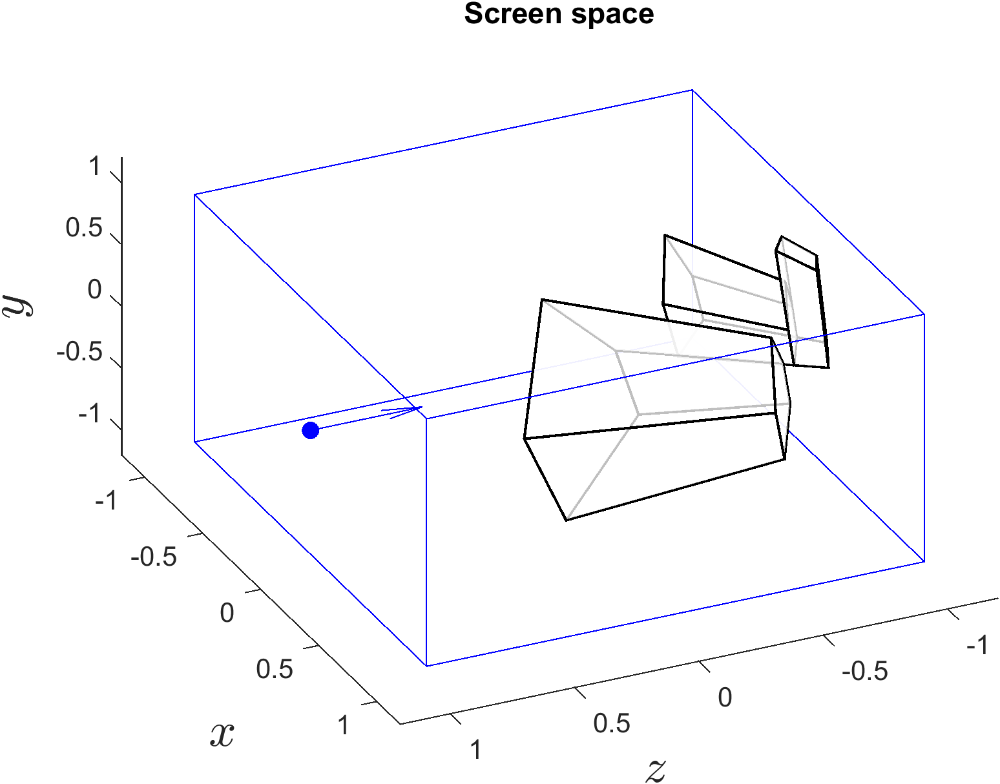
Fig. 70 The screen space from Example 32 viewed from an arbitrary point.#
{kind=link}
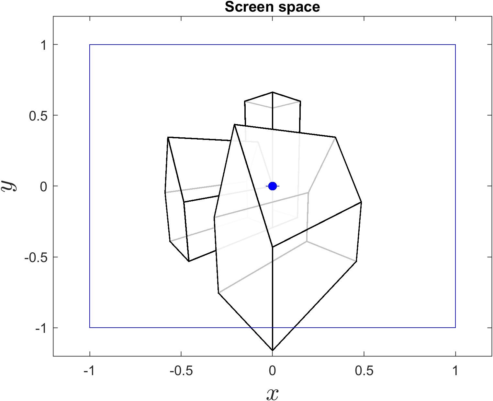
Fig. 71 The screen space from Example 32 viewed looking down the \(z\)-axis.#